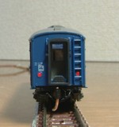

客車(座席車ほか)

|
10系客車(座席車)ナハ11・ナハフ11です。 |
10系客車(寝台車)10系寝台車とスロ62です。 |
|
スハ43系スハ43系ほか、青色の客車をいろいろ加工しました。 |
|
大雪の客車たちKATO「大雪」のASSYです。軽加工で北海道仕様を解除。 |
|
オハフ33-1500オハ36と同時進行していたオハフ33-1500です。この写真でわかる方は、結構マニアです。 |
|
オハ36オハ35系はまだまだ続き、今度はオハ36が落成しました。 数えてみたら現時点でオハ35系だけで18両が在籍していて、ちょっとした客車区みたいです。 |
|
オハ61トミックスから発売されたオハ61です。 |
|
スロ81緑帯スロ81の6両編成です。 |
|
オハ46オハ46とオハフ45をお手軽加工で作りました。 |
|
|  |
オハフ33KATOオハフ33に端梁をつけました。 |
オハ35系戦後型・スハ42KATOオハフ33を加工して製作した、オハ35系戦後型キノコ折妻です。 加工箇所が少ない割には手がかかりました。 で、オハ35の特集も組んでみました。 |